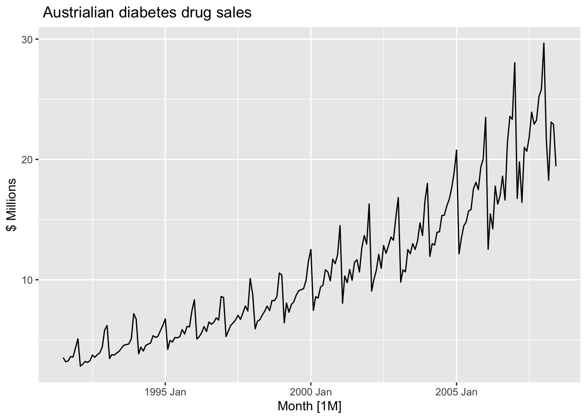
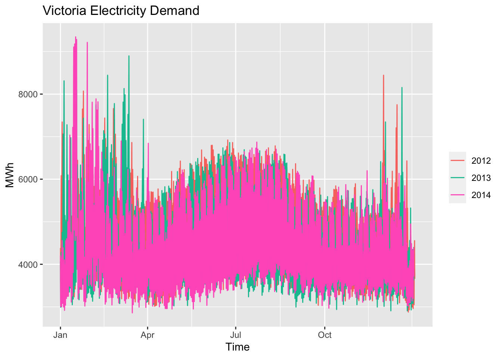
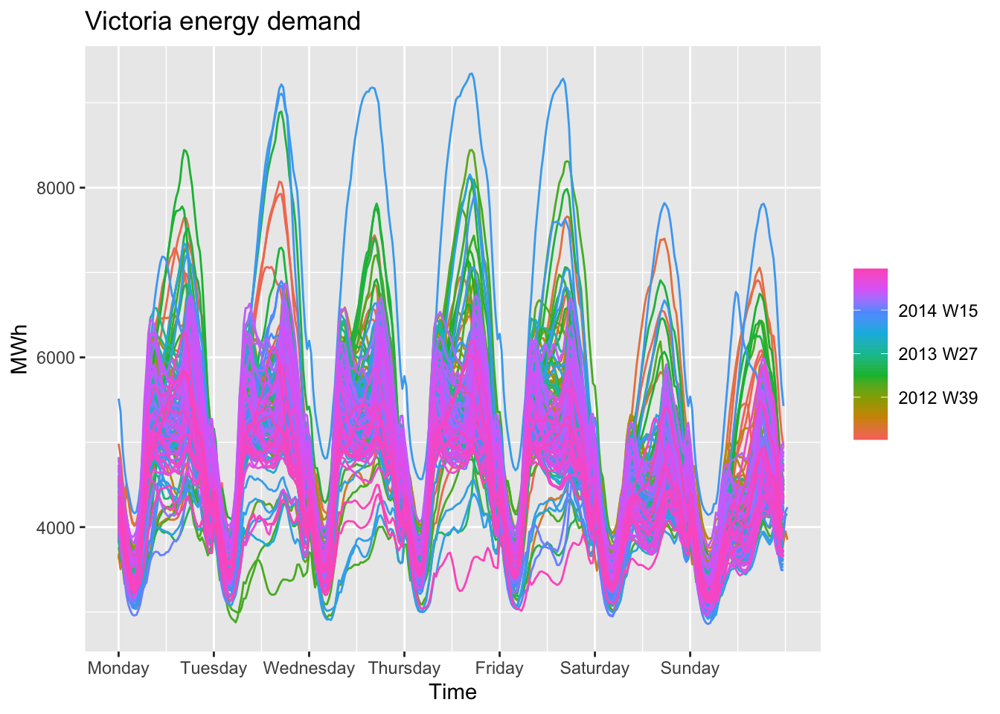
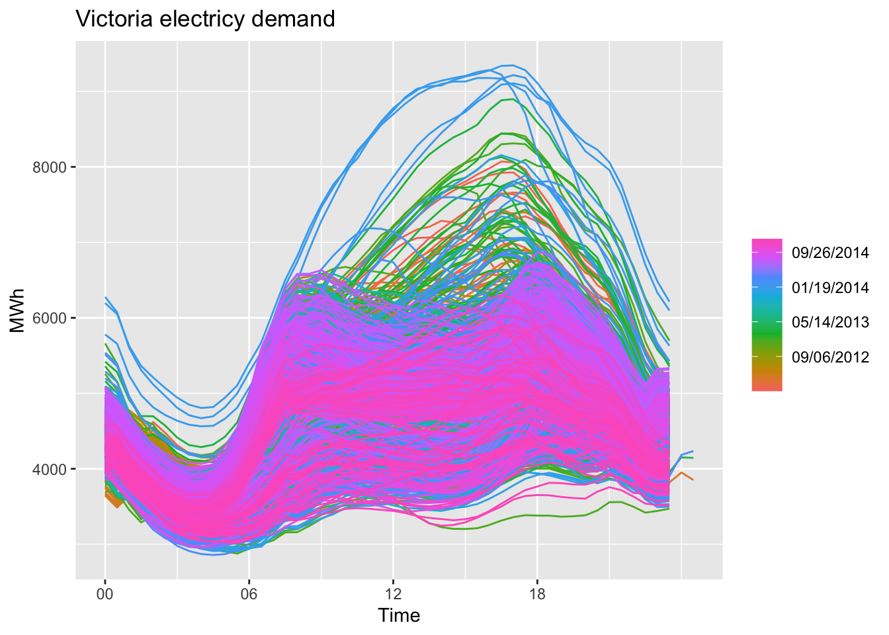
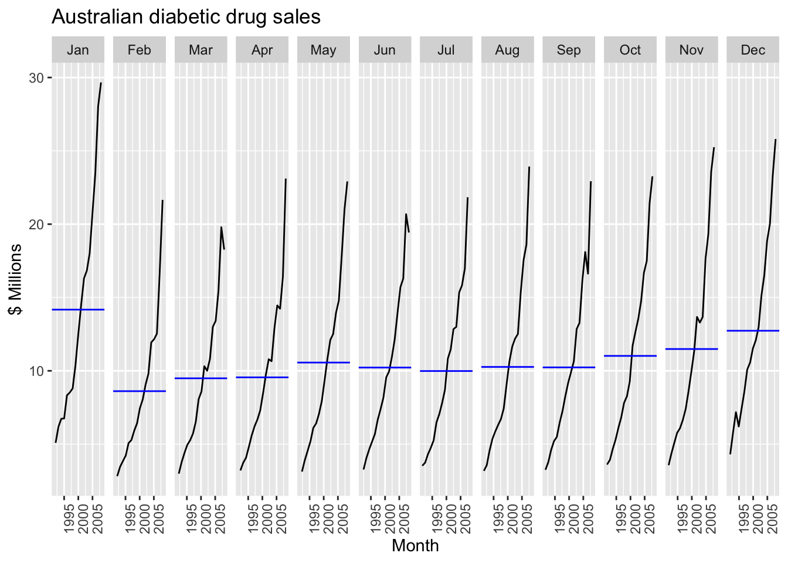

The PBS dataset contains sales data on pharmaceutical products in Australia by month.
head(PBS)
# A tsibble: 6 x 9 [1M]
# Key: Concession, Type, ATC1, ATC2 [1]
Month Concession Type ATC1 ATC1_desc ATC2 ATC2_desc Scripts Cost
<mth> <chr> <chr> <chr> <chr> <chr> <chr> <dbl> <dbl>
1 1991 Jul Concessional Co-paymen… A Alimenta… A01 STOMATOL… 18228 67877
2 1991 Aug Concessional Co-paymen… A Alimenta… A01 STOMATOL… 15327 57011
3 1991 Sep Concessional Co-paymen… A Alimenta… A01 STOMATOL… 14775 55020
4 1991 Oct Concessional Co-paymen… A Alimenta… A01 STOMATOL… 15380 57222
5 1991 Nov Concessional Co-paymen… A Alimenta… A01 STOMATOL… 14371 52120
6 1991 Dec Concessional Co-paymen… A Alimenta… A01 STOMATOL… 15028 54299
The data set shows Medicare prescription data from July 1991
The classifications are based on the concession type and Anatomical Therapeutic Chemical (ATC) indexes.
We can use dplr functions with tsibble objects. In this case, we are interested in the Cost time series of A10 scripts in millions of dollars.
a10 <- PBS |>filter(ATC2 =="A10") |>select(Month, Concession, Type, Cost) |>summarize(TotalC =sum(Cost)) |>mutate(Cost = TotalC/1e6) # Makes the values more managable
autoplot() will automatically produce the appropriate plot based on what is passed to it as the first argument.
We can also specify the argument that autoplot() should use in order to generate the plot (e.g. Cost)
autoplot(a10, Cost) +#Specifies that we are plotting Costlabs(y ="$ Millions",title =" Austrialian diabetes drug sales")

There is a increasing trend with a strong seasonal pattern that increases in size over time.
The sudden drop in the beginning of the year is due to the government subsidization scheme. This incentives patients to stockpile drugs at the end of the year to save money.
Another interesting time series is flights between Australia’s two largest cities. Below is a plot of the weekly economy passengers (in thousands) between Melbourne and Sydney.
There is a large drop in the late 1980s due to pilot strikes where no passengers traveled.
There is also a big dip in 1992, where the airline changed economy seats to business class. The level of passengers returned to normal levels when the airline reversed their decision.
The dips in number of passengers at the beginning of each year is due to holiday effects.
Below is a plot that verifies the swap between business and economy seats in 1992:
ansett |>filter(Airports =="MEL-SYD") |>mutate(Passengers = Passengers/1000) |>autoplot(Passengers) +labs(title ="Ansett airlines by class type",subtitle ="Melbourne-Sydney",y ="Passengers (Thousands)")
The vec_elec dataset contains half-hourly electric demand for Victoria Australia.
A seasonal plot with a yearly pattern shows seasonality and that usage remained high in later into Q1 in 2013 than the other years.
vic_elec |>gg_season(Demand, period ="year") +labs(y ="MWh",title ="Victoria Electricity Demand")

There are so many observations that it is hard to gain much insight from the yearly plot.
Weekly demand
Addition trends can be seen when plotting seasonal electricity demand with a weekly pattern
vic_elec |>gg_season(Demand, period ="week") +labs(y ="MWh",title ="Victoria energy demand")

Week days have higher demand than weekend days.
Each day has two spikes in demand, likely when people wake up to get ready for work and again when they get home. The spikes are smaller on weekends likely due to less regimented schedules. When people can sleep in, demand is spread out.
Daily demand
Daily demand will show seasonality over the hours in a day.
vic_elec |>gg_season(Demand, period ="day") +labs(y ="MWh",title ="Victoria electricy demand")

The three lines that are above normal each year is due to three days a year having 25 hours due to daylight savings time. The three days that have less than 24 hours are lost in the middle.
We can see that most people are asleep start using less electricity around 10pm and demand is at it’s lowest around 4am.
People start waking up around 5am, which increases until about 8am as most people are up for work. There is another equally large spike around 6pm when people come back home from work.
Seasonal Subseries Plots
Subseries plots for Australian diabetic drug sales
a10 |>gg_subseries(Cost) +labs(y ="$ Millions",title ="Australian diabetic drug sales")

The blue line indicates the mean for each month.
The subseries plot makes it easier to identify changes within a specific season.
The drug sales plot is doesn’t reveal any real new information but we can see changes in the Australian holiday tourism (quarterly) dataset. Suppose we want to investigate how quarterly holiday vacation days are spent by state for each quarter.
The Northern Territory and Queensland have their peak travel in Q3, which is the opposite of South Australia, Tasmania, and Victoria.
This is likely due to northern states having the most tourism during their dry season (Q3) and southern ones having their highest levels of tourism during the summer (Q1).
It is easier to see trends in the subseries plots for each season.